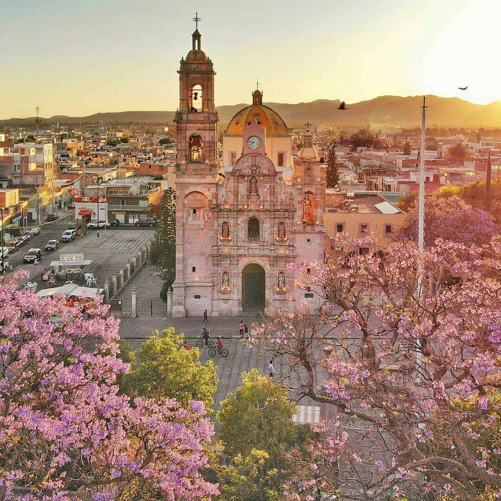

Aguascalientes es un estado ubicado en la región centro-norte de México. Su capital es la ciudad de Aguascalientes, conocida por su desarrollo industrial y su calidad de vida. El estado tiene una superficie de 5,618 km² y una población de aproximadamente 1.4 millones de habitantes, según el censo de 2020. Aguascalientes es uno de los estados más pequeños del país, pero se destaca por su dinamismo económico, especialmente en los sectores automotriz, textil, y servicios.
La Feria Nacional de San Marcos es la tradición más representativa de Aguascalientes, celebrada anualmente entre abril y mayo. Conocida como "la feria de México", este evento incluye exposiciones ganaderas, eventos culturales, deportivos, y una gran variedad de espectáculos, atrayendo a millones de visitantes cada año. Además, la Romería de la Virgen de la Asunción, que se celebra en agosto, es otra tradición importante que combina lo religioso con lo cultural.
Entre los platillos típicos de Aguascalientes destacan las enchiladas aguascalentenses, que son tortillas rellenas de pollo y cubiertas con una salsa de guajillo. Otro platillo tradicional es la sopa campesina, un caldo preparado con elote, zanahoria, chayote, y jitomate. Estos platillos reflejan la influencia de la cocina central mexicana, con ingredientes frescos y preparaciones sencillas pero sabrosas.
| Dato de interés | Dato de interés | Dato de interés |
|---|---|---|
| Aguascalientes es un centro clave para la industria automotriz en México, albergando plantas de ensamblaje de importantes marcas como Nissan y COMPAS, lo que impulsa la economía local y genera miles de empleos. | El estado es uno de los principales productores de guayaba en el país, con cultivos que destacan por su calidad y sabor. La guayaba de Aguascalientes es muy apreciada en el mercado nacional e internacional. | El nombre "Aguascalientes" proviene de las aguas termales que los españoles encontraron en la región durante la época colonial. Estas aguas termales aún son un atractivo turístico en la región. |